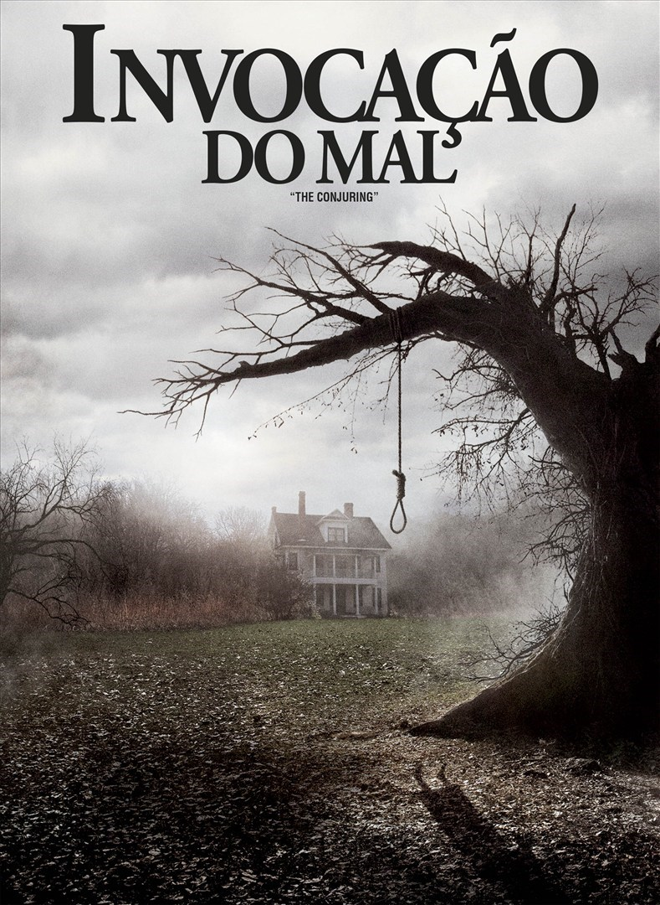

- Hereditário Sinopse
- O Exorcista Sinopse
- Invocação do Mal  Sinopse
- Mártires Sinopse
- Psicose
Após a morte da reclusa avó, a família Graham começa a desvendar algumas coisas. Mesmo após a partida da matriarca, ela permanece como se fosse uma sombra sobre a família, especialmente sobre a solitária neta adolescente, Charlie, por quem ela sempre manteve uma fascinação não usual. Com um crescente terror tomando conta da casa, a família explora lugares mais escuros para escapar do infeliz destino que herdaram.
Prime video MAX NetflixUma atriz vai gradativamente tomando consciência de que a sua filha de doze anos está tendo um comportamento completamente assustador. Deste modo, ela pede ajuda a um padre, que também é um psiquiatra, e este chega a conclusão de que a garota está possuída pelo demônio. Ele solicita então a ajuda de um segundo sacerdote, especialista em exorcismo, para tentar livrar a menina desta terrível possessão.
Prime video MAXOs investigadores paranormais Ed e Lorraine Warren trabalham para ajudar a família aterrorizada por uma entidade demoníaca em sua fazenda.
Prime videoDuas jovens que foram vítimas de abuso quando crianças embarcam em uma sangrenta jornada de vingança e acabam envolvidas em um caminho obscuro.
Indisponivel Sinopse
Sinopse
Após roubar 40 mil dólares para se casar com o namorado, uma mulher foge durante uma tempestade e decide passar a noite em um hotel que encontra pelo caminho. Ela conhece o educado e nervoso proprietário do estabelecimento, Norman Bates, um jovem com um interesse em taxidermia e com uma relação conturbada com sua mãe. O que parece ser uma simples estadia no local se torna uma verdadeira noite de terror.
Prime video Telecine